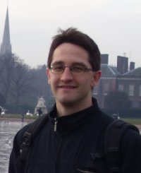
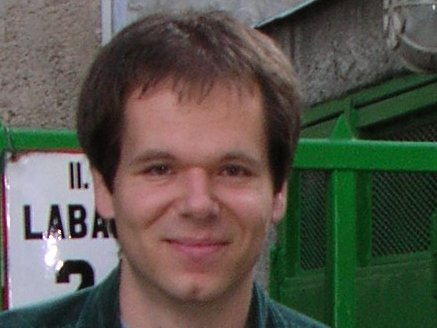
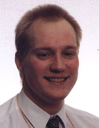
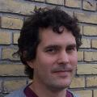

StatAlign
(c) 2008 Ádám Novák, István Miklós, Rune Lyngsoe, Jotun Hein
(c) 2012 Preeti Arunapuram, Ingólfur Eðvarðsson, Michael Golden, James Anderson

Ádám Novák graduated in 2007 with an MSc degree in Computer Science. Besides, he has strong background in Biology, Mathematics and Bioinformatics as well as extensive IT industrial experience. He has joined the the Statistical Alignment project of the Department of Statistics at Oxford University in 2007. Currently, he is working on his PhD on MCMC methods and Statistical Alignment.

István Miklós got his PhD in Theoretical Biology and Ecology at the Eötvös Loránd University, Budapest in 2002. He was a postdoc in the Bioinformatics group, Department of Statistics at the University of Oxford from 2002 until 2004 and at the Eötvös Loránd University from 2004 until 2006. He got a young researcher position at the Rényi Institute in 2006, and he is a visitor in the Bioinformatics group in Oxford in the 2007/2008 academic year.

Rune Lyngsoe
got his PhD at the University of Aarhus, Denmark. He is a postdoc in the
Bioinformatics group, Department of Statistics at the University of Oxford from 2002.

Jotun Hein is a full professor in bioinformatics at the Department of Statistics, University of Oxford.